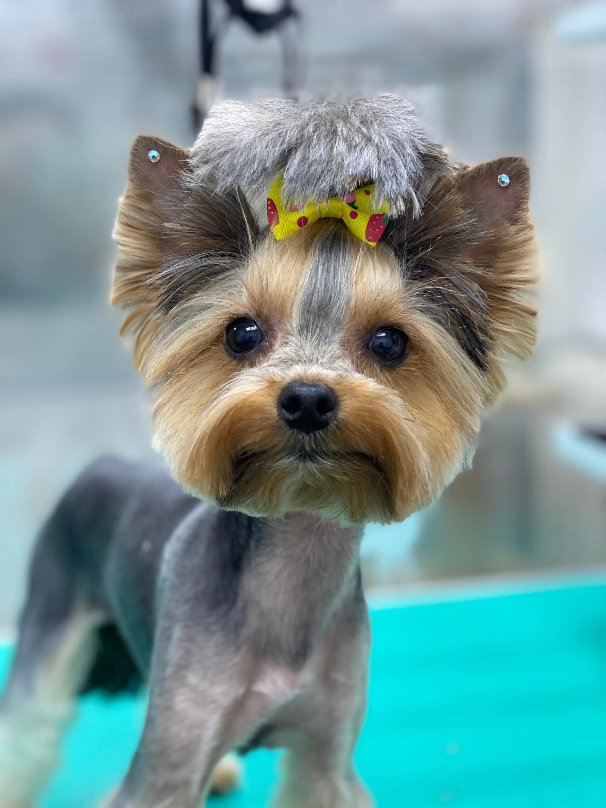
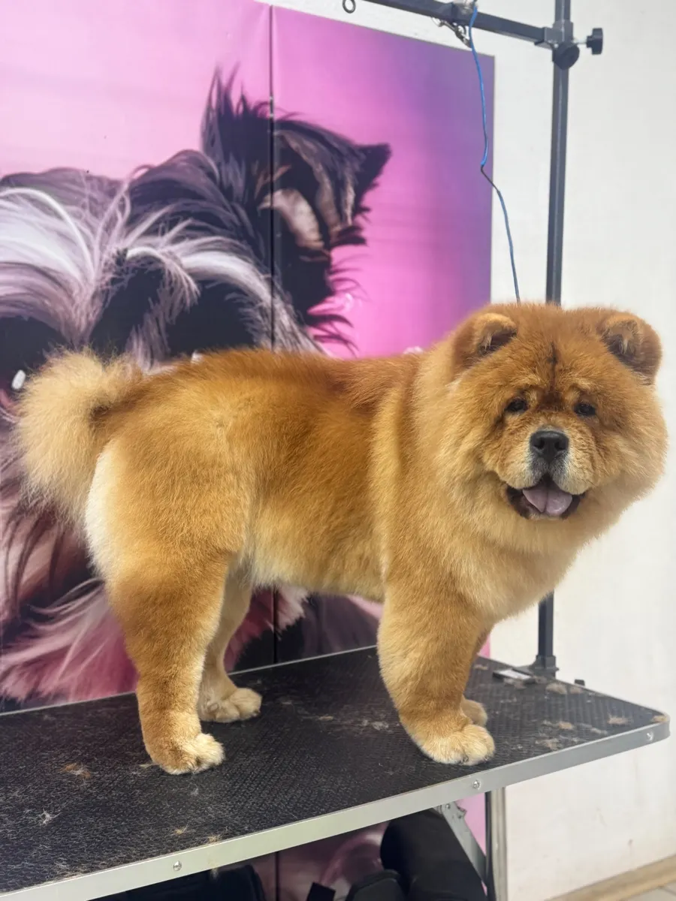
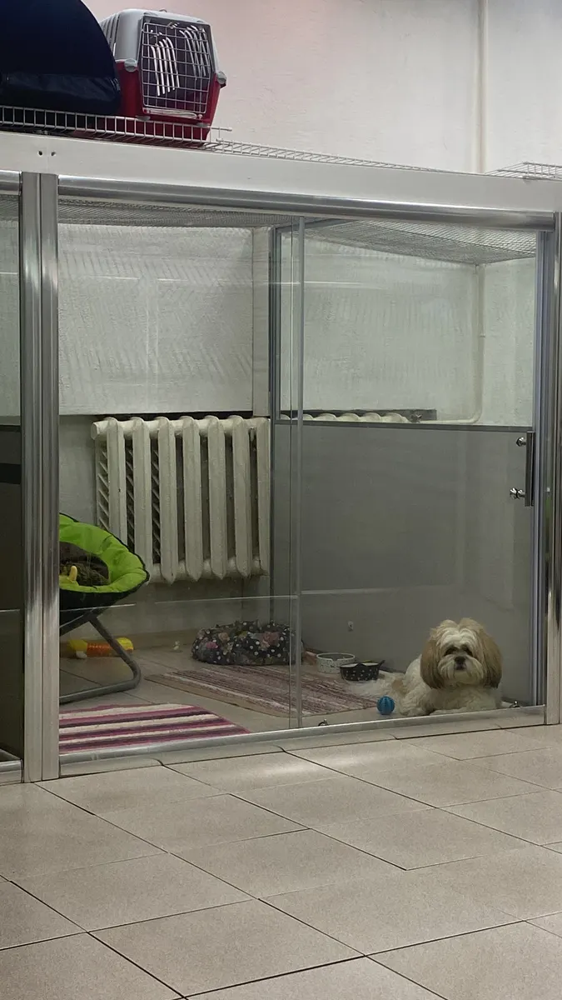
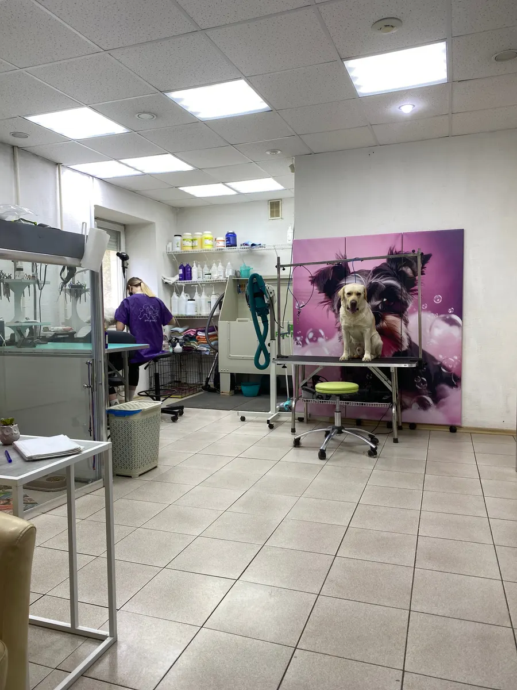

Груминг-салон · Ижевск
Груминг собак и кошек в Ижевске – работы, услуги и запись
Фото работ салона, услуги и запись – на одной странице. Есть мини-гостиница и дневная передержка.
- Открыто каждый день, 10:00–20:00
- 4,8 на Яндекс.Картах
- Мини-гостиница и дневная передержка

Услуги и цены
Услуги салона по отзывам клиентов и данным карточки. Цены на карточке не указаны: актуальные назовёт мастер при записи.
Груминг
- Стрижка собакуточнить
- Стрижка кошекуточнить
- Экспресс-линькаВычёсывание колтунов и подшёрсткауточнить
- Креативная стрижка и окрашиваниеОбсуждается с мастеромуточнить
- Подстригание когтейуточнить
Гостиница и передержка
- Мини-гостиница для животныхМини-номера с лежанками и игрушкамиуточнить
- Дневная передержкауточнить
Принимаем собак, кошек, хорьков, птиц, кроликов, лис и морских свинок. Скидки и подарочный сертификат: условия уточняйте у мастера.
Как записаться
- 01
Выбираете услугу
Груминг, мини-гостиница или дневная передержка.
- 02
Пишете в WhatsApp или звоните
Запись предварительная, салон открыт каждый день с 10:00 до 20:00.
- 03
Согласуете время и цену заранее
Мастер называет стоимость до начала работы.
- 04
Приходите на Воровского, 142
Есть парковка и Wi-Fi, вход с улицы.



Что важно знать
Принимаем всех животных
Собаки, кошки, хорьки, птицы, кролики, лисы, морские свинки.
Груминг и гостиница в одном месте
Клиентка в отзыве отмечает мини-гостиницу, где питомец не один.
Удобная оплата
Наличными, банковским переводом и по СБП. Есть подарочный сертификат.
Удобно добираться
Есть парковка, рядом остановка общественного транспорта.
Отзывы с Яндекс.Карт
«Супер место для ваших пушистиков! Девочки мастера своего дела! Сделают из вашего любимчика настоящую конфетку! Само место расположено тоже довольно удобно, как на общественном транспорте можно удобно добраться так и на своём авто(есть парковка).»
Наталья Курылева · 27 июня
«Потрясающий грумминг салон. Ольга супер классный мастер, человек, который занимается любимым делом и с душой подходит к процессу. Посещаем каждые 3 недели, собака не боится мастера (до этого был плохой опыт в распиаренном салоне , где испортили шерсть и грубо обращались). Здесь Ольга подошла с умом к уходу, поэтому удалось частично восстановить состояние шерсти.»
Ксения Н. · 15 января
«Наша любимая фея по прическам, ходим всей семьёй (и пёс, и коты). Отношение к животным как к детям, с любовью и большим терпением и, самое главное, на первом месте - это сохранение здоровья животного, с учётом особенности породы, а потом уже красота. Специалисты знающие свое дело!»
Мария Иванова · 27 января 2025
Отзывы с карточки на Яндекс.Картах.
Запись на ближайшие дни
- Адрес
- ул. Воровского, 142, Ижевск
- Часы
- Ежедневно 10:00–20:00
- Телефон
- +7 (909) 060-66-07